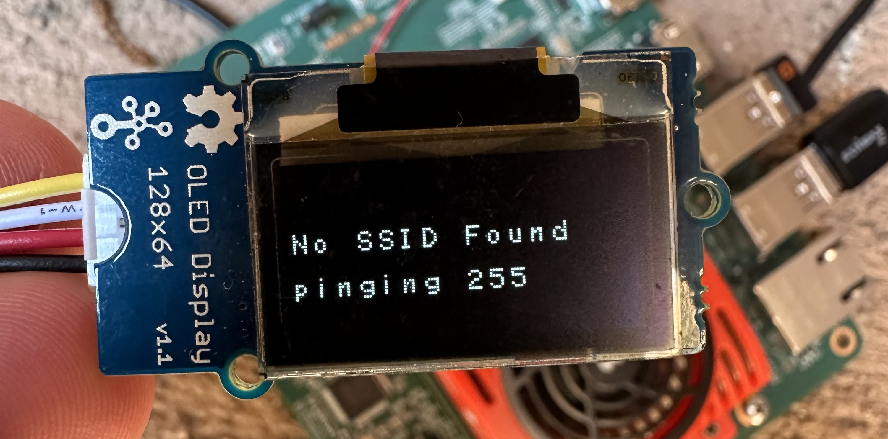
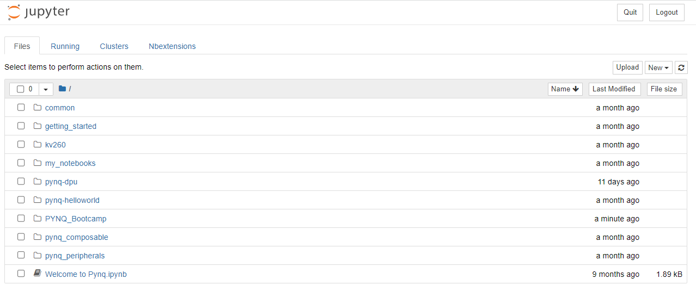

Table of Contents
- Unboxing
- Powering on The Board
- Find Your Board's IP Address with OLED Screen
- Connecting to Jupyter Notebooks
- More Information for Getting Started
Unboxing
Your kit will include the following items
- KIRA SOM Board
- Ethernet Cable
- Power Supply
- USB Cable
- PMOD to Grove Adapter
- Wifi Dongle
- SD Card
- PYNQ Peripherals
- Grove LED Bar
- Grove RGB LED Stick
- Grove OLED Screen
- Grove Water Sensor
- Grove Ultrasonic Ranger
- Grove Temperature Sensor
- PIR Motion Sensor
Powering on The Board

Step 1: Insert the sd card

Step 2: Plug in the micro-USB cable to the board

Step 3: Plug in the PMOD Adapter

Step 4: Plug in the Wifi Dongle

Step 5: Plug in the Barrel Power Cord
Find Your Board's IP Address with OLED Screen
- Unplug your board from power
- In step 3 of powering on your board, you installed the PMOD adapter. PLUG in the OLED screen from your kit into pin G4 on the PMOD adapter
- Plug your board back in
- Wait for a minute for the board to power up
- You should now see text displayed on the OLED screen that shows what network you are connected to as well as your board's IP address 
- If after trying this process several times and it still does not work then try this, Connect to your Board Via UART on the F.A.Q page
- NOTE: Your IP address will change if you connect to different networks
Connecting to Jupyter Notebooks
Once you have the IP address of your board, we can finally connect to it through your laptop! For this to work your board and laptop must be on the same Wifi network
- Connect your laptop to the Wifi network assigned to you and your board
- Open a web browser of your choice
- In the search bar type in the IP address of your board followed by ":9090". It will look something like this "192.168.1.5:9090"
- This will open up the login page for the Juypter notebooks. The password is xilinx
- You are now ready to start writing code!
- This is what you will see after loging in. These are all of the notebooks and training sthat will be used throught the bootcamp. 
- NOTE: If you are no longer able to connect to your notebooks, repeat the steps to find your IP address as it may have changed